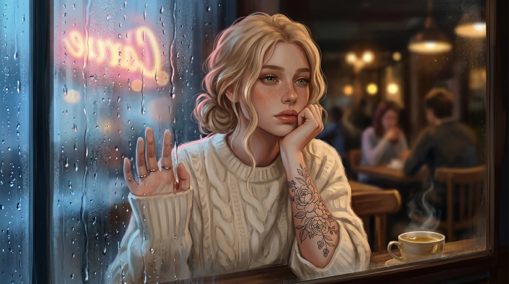
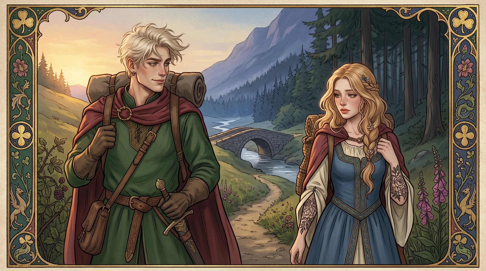
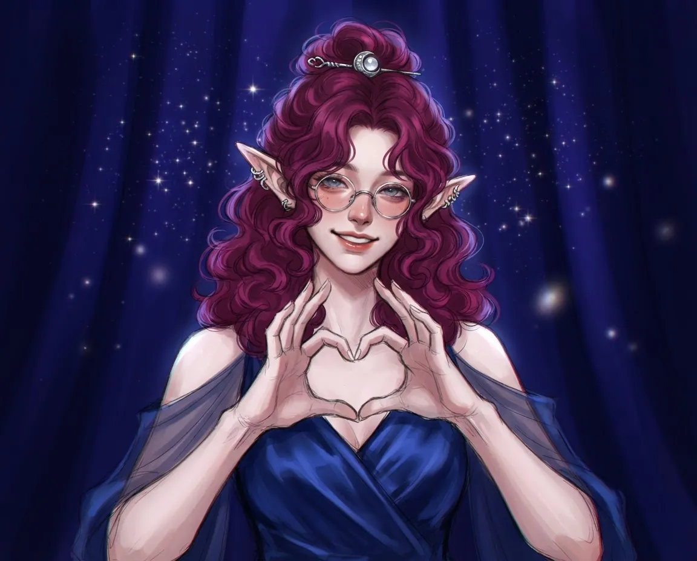
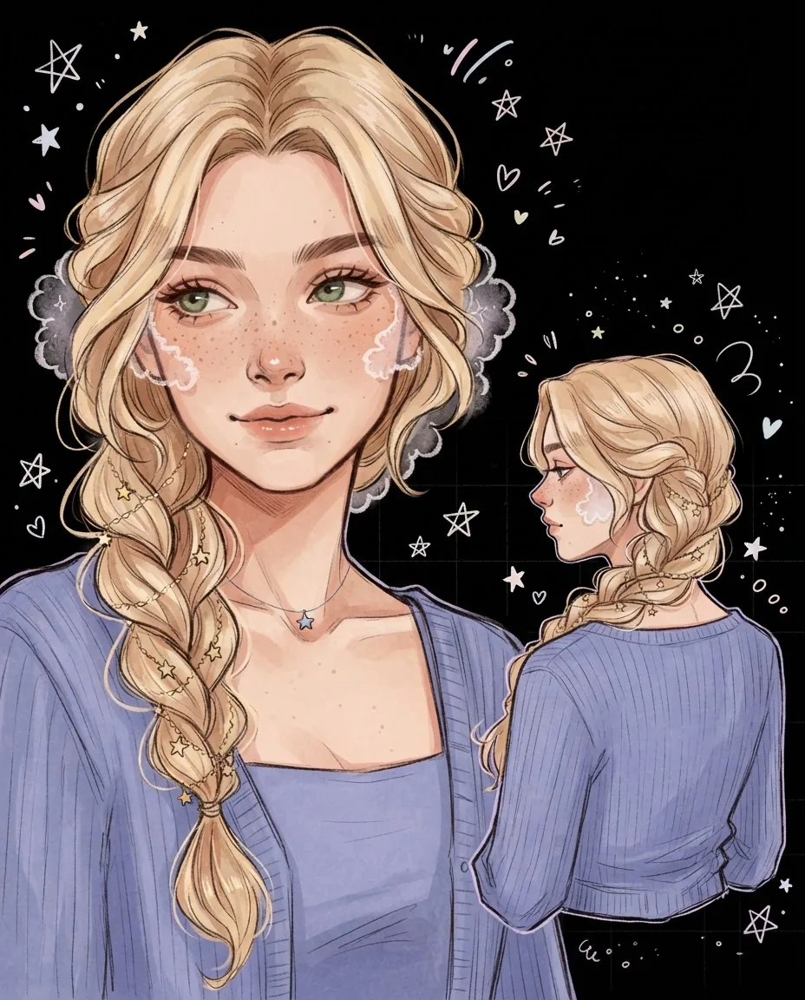
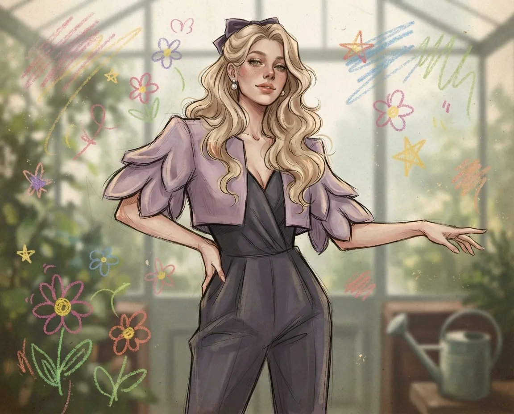
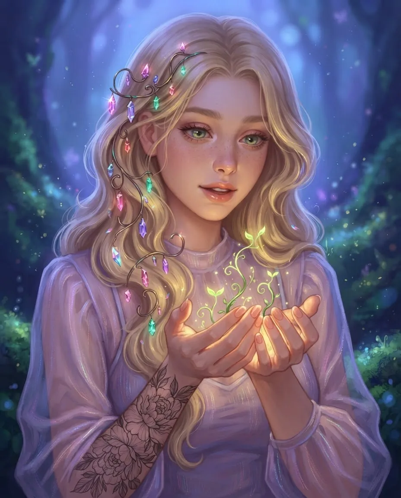
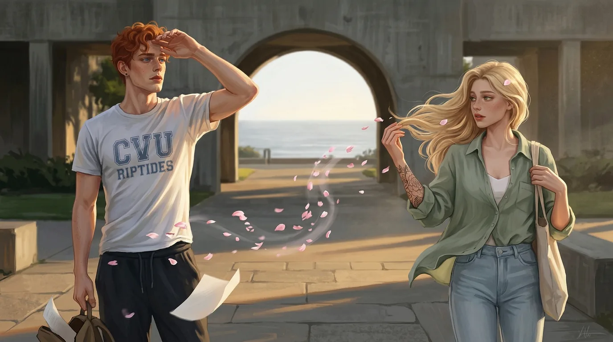
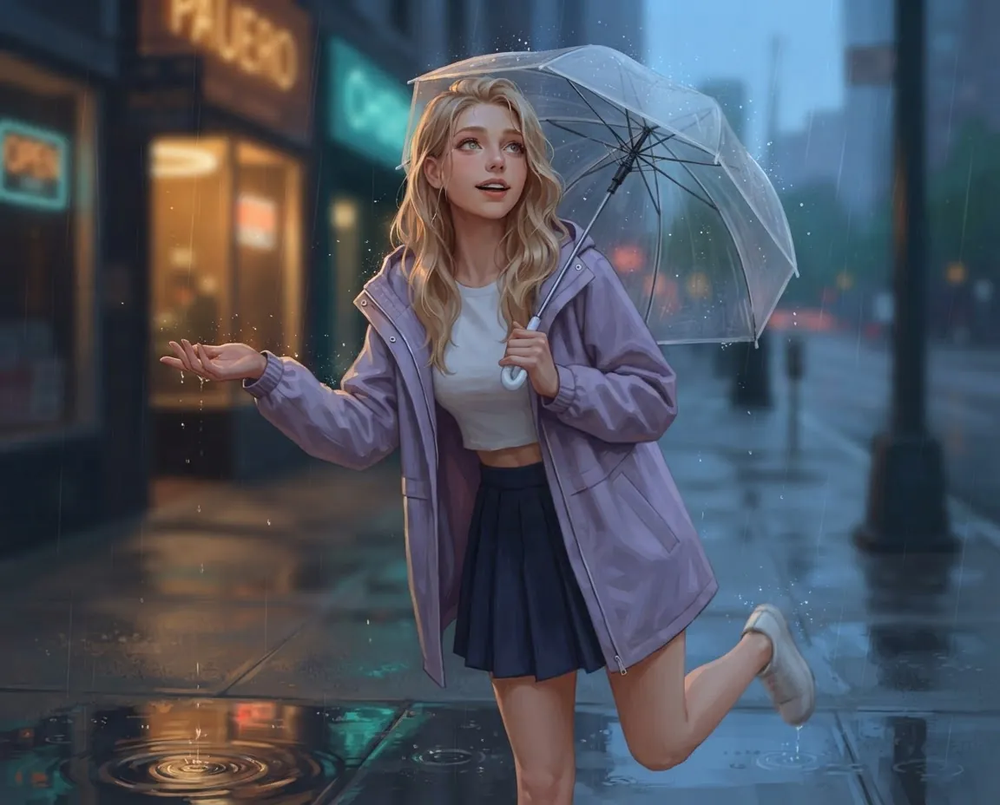
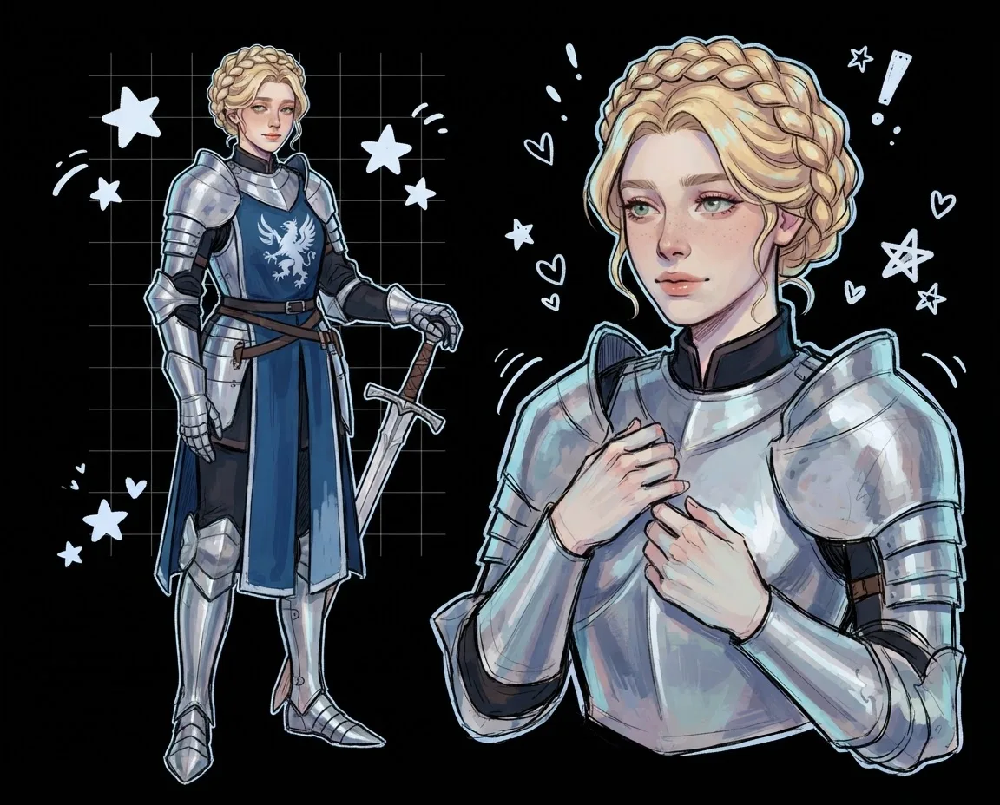

Clover OOC · Visual Prompt ArchiveClover OOC · Архив визуальных промптов
Direct the image.
Browse the archive.Управляйте кадром.
Исследуйте архив.
A bilingual collection of complete image directions, reusable visual fragments, and construction tools curated for SillyTavern and direct image generation.Двуязычная коллекция готовых визуальных заданий, универсальных фрагментов и конструкторов для SillyTavern и прямой генерации изображений.

01 · HOLDINGS
The archive at a glanceАрхив в цифрах
Complete prompts, reusable fragments, and tools arranged by what they do.Готовые промпты, универсальные фрагменты и инструменты, сгруппированные по назначению.
Complete promptsГотовые промпты
Copy and send as a full instructionКопируются и отправляются целиком
- 01CatalogueКаталогMood, camera, light, and visual storytellingНастроение, камера, свет и визуальная история250
- 02Detailed scenesПодробные сценыSolo, couple, group, and conceptual situationsСоло, пары, группы и концептуальные ситуации112
- 03Image restylesРестайлы изображенийTransform an attached reference into something newПреобразуют прикреплённый референс127
Reusable fragmentsУниверсальные фрагменты
Add to a complete prompt or your own requestДобавляются к готовому или собственному промпту
- 04Poses & expressionsПозы и эмоцииBody geometry, reactions, and interactionsПоложение тела, реакции и взаимодействия110
- 05HairstylesПричёскиStructure, texture, and styling detailsСтруктура, текстура и детали укладки275
- 06Styled outfitsГотовые образыComplete ready-made clothes linesГотовые подробные строки одежды820
Construction toolsКонструкторы
Build and combine instead of choosing one presetСобирают и объединяют элементы
02 · VISUAL INDEX
One archive, many visual languagesОдин архив, множество визуальных языков
A small contact sheet from hundreds of image-backed references.Небольшой контактный лист из сотен референсов с изображениями.








03 · FROM THE CATALOGUE
Three prompts, drawn at randomТри случайных промпта
Select any entry to copy its canonical English prompt.Выберите любую запись, чтобы скопировать канонический английский промпт.
Solo / Cinematic Соло / Кинематограф
Cinematic Vision Кинематографичный взгляд
solo-1Image generation: frame the character like a movie still from a film that doesn't exist yet. Full cinematic treatment: depth of field, intentional color grading, rule-of-thirds composition.Генерация: выстрой кадр как стоп-кадр из фильма, которого ещё не существует. Полная кинематографическая обработка: глубина резкости, осознанная цветокоррекция, композиция по правилу третей.
Copy English promptСкопировать английский промпт 02Solo / Architectural Соло / Архитектура
Space & Scale Пространство и масштаб
solo-2Image generation: let the space be the main character. The person in the frame should feel small against something vast - a hallway stretching too long, a ceiling too high, an empty room that echoes.Генерация: пусть пространство станет главным героем. Человек в кадре должен казаться маленьким на фоне чего-то огромного - коридор тянется слишком далеко, потолок слишком высок, пустая комната эхом отзывается.
Copy English promptСкопировать английский промпт 03Pair / Tension Пара / Напряжение
Circling Each Other В орбите друг друга
pair-1Image generation: frame two people who are caught in each other's gravity. They don't have to be touching - in fact, it's more interesting if they aren't. The space between them should hum.Генерация: выстрой двух людей, которые пойманы гравитацией друг друга. Им не обязательно соприкасаться - на самом деле, интереснее если нет. Пространство между ними должно гудеть.
Copy English promptСкопировать английский промпт04 · USE
Build only what the image needsСобирайте только то, что нужно кадру
Start with a complete direction. Add fragments only when they change the result.Начните с готового задания. Добавляйте только те фрагменты, которые меняют результат.
New to Clover? Read the complete field manual.Впервые в Clover? Прочитайте полное руководство.